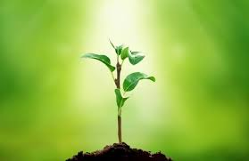
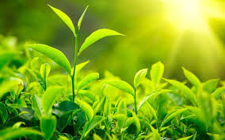
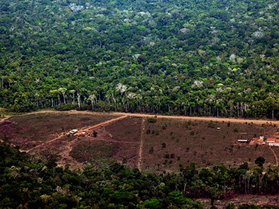
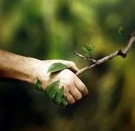

O que é?
Como o nome já diz, fitossanidade é a sanidade das plantas, ou saúde das plantas. Esse conceito foi concebido no início do século XX e conscientiza as pessoas sobre a proteção das plantas e florestas, além de combater o uso de agrotóxicos e outras pragas que podem causar consequências desastrosas para o meio ambiente.

Importância
A fitossanidade é muito importante porque ela protege todo o meio ambiente e a biodiversidade de perigos, como pragas, doenças, desmatamento, entre ourtos.
Além de proteger o meio ambiente e os animais, a fitossanidade também protege o ser humano. Essa ciência diminui os efeitos das mudanças climáticas e, sem ela, não teríamos praticamente nada do que comer, já que a natureza seria destruída e é de lá que tiramos nossos principais recursos para sobreviver.
Além de tudo isso, hoje em dia, praticar a fitossanidade é muito mais lucrativo do que produzir desmatando ou colocando agrotóxicos nas plantas.

Ameaças
De acordo com a UNESCO, as principais ameaças a fitossanidade atualmente são mudanças climáticas e as constantes atividades humanas nos ecossistemas. Esses males reduziram muito a biodiversidade, o que pode causar danos irreversíveis.

Agora é sua vez!
A UNESCO declarou 2020 como o ano da fitossanidade, por isso é nosso dever ajudar a preservá-la. Sempre procure modos mais ecológicos de realizar suas tarefas, como comprar comidas orgânicas, viajar com turismo ecológico, apoiar produtores agroflorestais, entre outras coisas. Vamos juntos superar todos esses desafios e nos tornarmos uma sociedade mais humana e sustentável!
